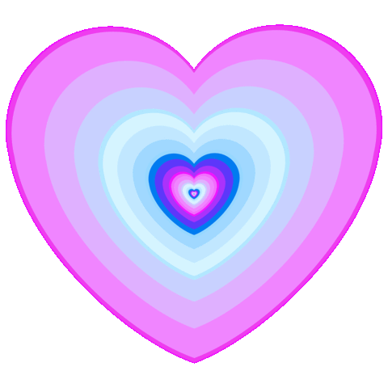

Sevgilim,
Dünya Yakışıklıları Günü'nü kutlamak için sana bu kısa yazıyı yazıyorum.
Sen benim için dünyanın en yakışıklı erkeğisin. Sadece dış görünüşünden değil, iç güzelliğinden de çok etkileniyorum.
Sen nazik, şefkatli, anlayışlı bir insansın. Seninle birlikteyken kendimi çok mutlu ve güvende hissediyorum.
Umarım bu gün senin için çok özel olur. Seninle birlikteyken geçirdiğim her anı çok seviyorum.
İyi Ki Varsın.
Senin sevgilin,
Asu 